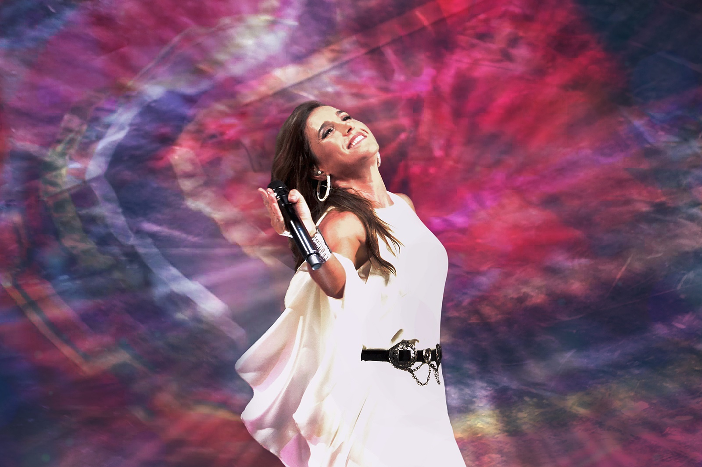

A poco de haber comenzado la gira nacional de presentación de su nuevo disco “Natural”, que tuvo su puntapié inicial con una serie de exitosos conciertos a sala llena en el Teatro Coliseo.

Soledad genera pasiones. Y no es difícil entender por qué después de presenciar los cinco shows que brindó en cada anoche, fueron tan únicos y emotivos y tan Natural.

Los temas que se escucharon, combinan, la música de raíz original con los ritmos más actuales. La Sole se mostró feliz cantando algunos géneros nativos que no había tenido oportunidad de abordar antes en su carrera.